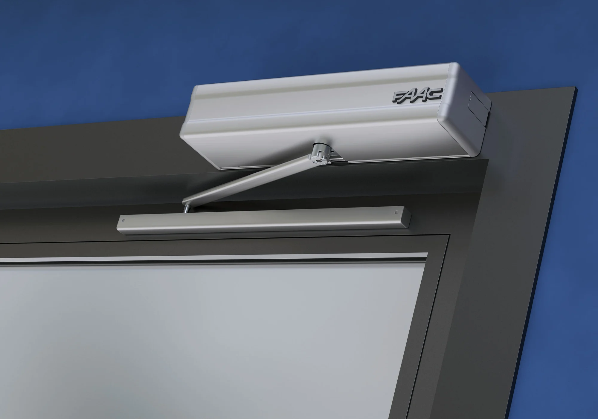
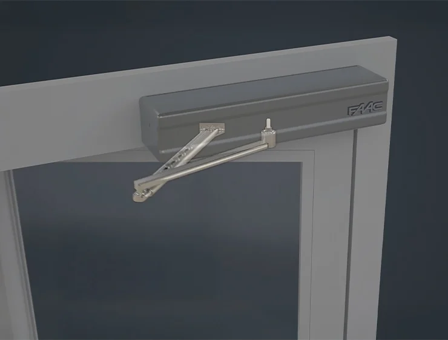
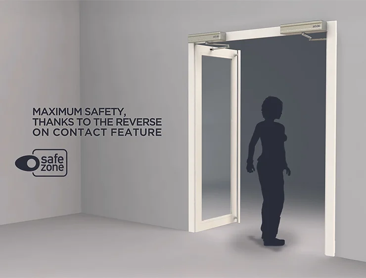

Automatismo para hojas batientes con peso hasta 370 kg a 24 V.
El automatismo 950N2, conforme a la EN16005, permite mover puertas de más de 360 kg con total silencio y servicio continuo.
La cubierta del automatismo es de aluminio anodizado color plata.


Los automatismos FAAC 950N2 (con sistema de cierre por resorte) pueden instalarse tanto en el dintel como directamente sobre la estructura de la puerta. La cubierta del automatismo puede ser de aluminio extruido anodizado o ABS moldeado con un diseño innovador.
Los automatismos 950N2 también pueden automatizar entradas con doble hoja conectando las dos unidades en configuración maestro/esclavo, permitiendo que ambas hojas se muevan como si fueran una sola automatización.

El automatismo cuenta con dos placas electrónicas: 950N2 MPS (control) y 950N2 I/O (entrada/salida). Un microprocesador controla en tiempo real todas las operaciones de la puerta, mientras que un encoder magnético detecta la posición angular en cada momento. Además, mediante un selector integrado, se puede elegir la lógica de funcionamiento (automático, manual, nocturno, abierto).
Fabricado conforme a las Normas Europeas de Seguridad, la velocidad y la fuerza se programan según el tamaño de la puerta. Si se detecta un obstáculo, la puerta se reabre de inmediato y durante el cierre verifica a velocidad reducida que no haya obstrucciones.
Información técnica